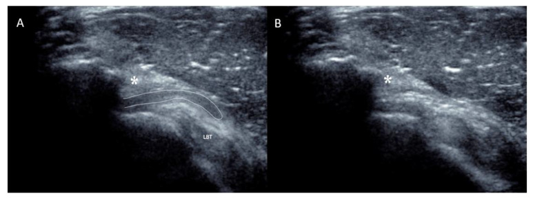

Respuesta clínica corta
¿Puede la bursa subacromial participar en un resalte doloroso?
Sí en esta pequeña serie: el desplazamiento brusco de su receso anterior coincidió temporalmente con el resalte reproducido durante ecografía dinámica.
Dato clave9 casos · asociación temporal, sin controles
En nueve casos seleccionados, el resalte coincidió con el desplazamiento brusco del receso anterior de la bursa bajo el ligamento coracoacromial; es una descripción clínica nueva, no una prueba de prevalencia o causalidad general.
Observado
Qué encontró y cómo interpretarlo
La observación temporal es consistente en los nueve casos, aunque la selección retrospectiva favorece casos llamativos.
La correlación exploratoria informada no fue estadísticamente significativa.
Atlas del artículo
Imágenes para entender el procedimiento
Estas figuras proceden del artículo original y se reproducen con licencia abierta verificada. Se muestran por su utilidad anatómica o técnica, no como prueba aislada de diagnóstico o eficacia.

La secuencia muestra el receso anterior visible antes del movimiento y su desaparición brusca bajo el ligamento coracoacromial durante el resalte.
Cómo leerlaEs un ejemplo de una serie seleccionada de nueve casos; no establece que todo resalte o dolor subacromial tenga este mecanismo.
Delafontaine y colaboradores, Figura 4 del artículo original · Fuente · Licencia CC BY.
Procedimiento del artículo
Reproducción ecográfica del resalte subacromial
La exploración debe reproducir el movimiento desencadenante manteniendo visible el borde anterior del acromion, el ligamento coracoacromial, la bursa y el tendón de la cabeza larga del bíceps.
- Muestra
- 9 pacientes
- Ventana
- Sagital sobre el borde anterior del acromion
- Dinámica
- Movimiento específico que reproduce el resalte
- 01
Localizar el receso
Situar el transductor sobre el borde anterior del acromion y reconocer la bursa superficial al intervalo rotador.
- Referencias
- Acromion, ligamento coracoacromial, deltoides, bursa y bíceps.
- Lectura
- El receso debe mantenerse dentro del plano antes de iniciar el movimiento.
- 02
Reproducir el gesto
Solicitar el movimiento que desencadena el resalte, ajustando el plano sin perseguir artefactos.
- Referencias
- Deslizamiento bursal bajo el arco coracoacromial.
- Lectura
- La coincidencia temporal entre desplazamiento y resalte es el hallazgo central.
- 03
Comprobar alternativas
Explorar tendones, bursa y articulaciones vecinas y correlacionar con resonancia cuando esté indicada.
- Referencias
- Manguito, bíceps, bursa y articulaciones.
- Lectura
- El hallazgo no excluye otras causas de resalte o dolor.
Protocolo reconstruido de forma prudente desde el texto completo y las figuras del artículo; sirve para comprender la adquisición y no sustituye formación, supervisión ni un proceso diagnóstico completo.
Aplicabilidad
Qué significa clínicamente
Reproducir el síntoma de forma segura durante la imagen.
Describir el mecanismo observado sin convertirlo automáticamente en diagnóstico causal.
Límite
Qué no permite afirmar
Solo nueve casos.
Sin grupo control ni cegamiento.
No se estima frecuencia, precisión ni respuesta terapéutica.
Contexto
¿Se parece a tu paciente?
- Población estudiada
- Nueve pacientes con resalte doloroso no traumático del hombro y desplazamiento ecográfico del receso anterior de la bursa.
- Diseño
- Serie retrospectiva de casos con ecografía dinámica
- Resultado evaluado
- Coincidencia temporal entre desplazamiento bursal y resalte
Fuente primaria
Lee el estudio, no solo nuestro análisis
Delafontaine A, Guillin R, Ropars M, Collin P. Snapping of the Subacromial Bursa: A New Cause of Shoulder Pain Demonstrated with Dynamic Ultrasound. Biomedicines. 2025;13(4):766. doi: 10.3390/biomedicines13040766
Responsabilidad editorial
Francisco José Extremera García
Fisioterapeuta colegiado ICPFA 4288 · Osteópata D.O.
Creador y responsable editorial de FisioLógico
- Última revisión
- Conflictos de interés
- Ninguno declarado.